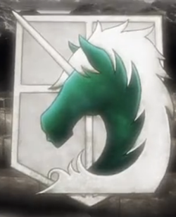
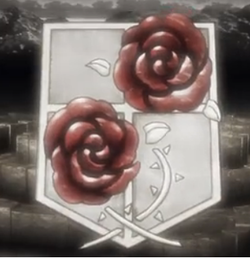

Shingeki no Kyojin
Descubra um pouco sobre as tropas do Anime

Polícia Militar
A Polícia Militar é muito privilegiada por ser a responsável por proteger o Rei e viver dentro da Muralha Sina. Somente os dez melhores no treinamento de cadetes podem se inscrever para a Polícia Militar.

Guarda Estacionária
A Guarda Estacionária é formada por soldados que ficam vigiando as muralhas e quando os titãs entram, eles os combatem.

Legião de Escotismo
A Legião de Escotismo é formada pelos soldados que se aventuram no mundo lá fora para caçar e matar os titãs. São conhecidos como heróis por todas as muralhas..